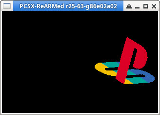

Steward
分享是一種喜悅、更是一種幸福
家用機 - Sony Play Station - C/C++ (PsyQ) - Rotate Texture
參考資訊：
https://psx.arthus.net/starting.html
https://github.com/ABelliqueux/nolibgs_hello_worlds#installation
https://github.com/ABelliqueux/nolibgs_hello_worlds/wiki/(Archived)--Embedding-binary-data-in-your-psx-executable
main.c
#include <sys/types.h>
#include <stdio.h>
#include <libgte.h>
#include <libetc.h>
#include <libgpu.h>
extern unsigned long _binary_ps1_tim_start[];
extern unsigned long _binary_ps1_tim_end[];
extern unsigned long _binary_ps1_tim_length;
int main(int argc, char *argv[])
{
const int w = 320;
const int h = 240;
DISPENV disp = { 0 };
DRAWENV draw = { 0 };
u_long ot = 0;
SPRT *sprt = 0;
DR_TPAGE *tpage = 0;
TIM_IMAGE tim = { 0 };
long flag = 0;
long depth = 0;
POLY_FT4 *poly = 0;
char buf[32768] = { 0 };
MATRIX PolyMatrix = { 0 };
VECTOR MovVector = { 0 };
VECTOR ScaleVector = { 0 };
SVECTOR RotVector = { 0 };
SVECTOR VertPos[4] = {
{ -32, -32, 1 },
{ -32, 32, 1 },
{ 32, -32, 1 },
{ 32, 32, 1 }
};
ResetGraph(0);
InitGeom();
SetGeomOffset(w / 2, h / 2);
SetDefDispEnv(&disp, 0, 0, w, h);
SetDefDrawEnv(&draw, 0, 0, w, h);
SetDispMask(1);
setRGB0(&draw, 0, 0, 0);
draw.isbg = 1;
PutDispEnv(&disp);
PutDrawEnv(&draw);
OpenTIM(_binary_ps1_tim_start);
ReadTIM(&tim);
LoadImage(tim.prect, tim.paddr);
DrawSync(0);
if (tim.mode & 8){
LoadImage(tim.crect, tim.caddr);
DrawSync(0);
}
while (1) {
poly = (POLY_FT4 *)buf;
ScaleVector.vx = ONE;
ScaleVector.vy = ONE;
ScaleVector.vz = ONE;
RotVector.vx = 0;
RotVector.vy = 0;
RotVector.vz = 180;
MovVector.vx = 50;
MovVector.vy = 0;
MovVector.vz = 0;
RotMatrix(&RotVector, &PolyMatrix);
TransMatrix(&PolyMatrix, &MovVector);
ScaleMatrix(&PolyMatrix, &ScaleVector);
SetRotMatrix(&PolyMatrix);
SetTransMatrix(&PolyMatrix);
setPolyFT4(poly);
poly->tpage = getTPage(tim.mode & 3, 0, tim.prect->x, tim.prect->y);
setRGB0(poly, 128, 128, 128);
RotTransPers(&VertPos[0], (long *)&poly->x0, &depth, &flag);
RotTransPers(&VertPos[1], (long *)&poly->x1, &depth, &flag);
RotTransPers(&VertPos[2], (long *)&poly->x2, &depth, &flag);
RotTransPers(&VertPos[3], (long *)&poly->x3, &depth, &flag);
setUV4(poly, 0, 0, 0, 200, 200, 0, 200, 200);
addPrim(&ot, buf);
DrawSync(0);
VSync(0);
PutDispEnv(&disp);
PutDrawEnv(&draw);
DrawOTag(&ot);
}
return 0;
}
P.S. img2tim會將PNG路徑轉成變數名稱：_binary + 路徑 + 檔名 + _start，路徑如果包含/、.，則會被轉成_
ps1.png
編譯、執行
$ img2tim ps1.png -o ps1.tim
$ mipsel-linux-gnu-objcopy -I binary -O elf32-tradlittlemips -B mips ps1.tim ps1.o
$ strings ps1.o | tail | grep _binary
_binary_ps1_tim_start
_binary_ps1_tim_end
_binary_ps1_tim_size
$ mipsel-linux-gnu-gcc -I/opt/nugget/psyq/include -I/opt/psyq/include -march=mips1 -mabi=32 -EL -fno-builtin -fno-pic -mno-shared -mno-abicalls -mfp32 -nostdlib main.c -c -o main.o
$ mipsel-linux-gnu-gcc -I/opt/nugget/psyq/include -I/opt/psyq/include -march=mips1 -mabi=32 -EL -fno-builtin -fno-pic -mno-shared -mno-abicalls -mfp32 -nostdlib main.o ps1.o -o main.elf /opt/nugget/common/crt0/crt0.o /opt/nugget/common/syscalls/printf.o -static -L/opt/psyq/lib -Wl,--start-group -lapi -lc -lc2 -lcard -lcomb -lds -letc -lgpu -lgs -lgte -lgun -lhmd -lmath -lmcrd -lmcx -lpad -lpress -lsio -lsnd -lspu -ltap -lcd -Wl,--end-group -Wl,--oformat=elf32-tradlittlemips -Tpsexe.ld
$ /opt/ps1/pcsx main.exe
